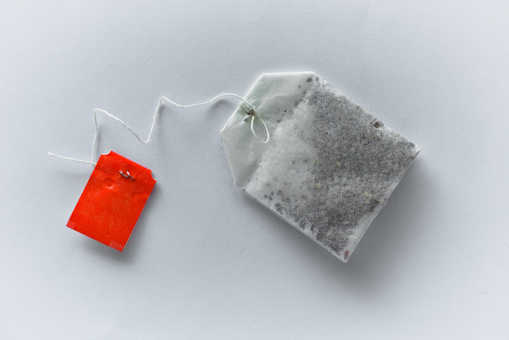

Tea!

Description
Perfect hot tea to warm you up on a cold winter day!!!
Ingredients
- 1x Tea bag (flavour of your choosing)
- Hot water (a reasonable amount)
- Sugar (optional and based on your taste!)
- Your favourite cup!
Instructions
- Fill kettle with reasonable amount of water then boil it
- Whilst waiting for kettle to boil, put tea bag in your favourite cup!
- Wait for kettle to boil
- After kettle has boiled, fill cup with tea bag in it with water
- Wait 2 minutes or however long as suggested for tea to brew
- Once tea has brewed, enjoy!